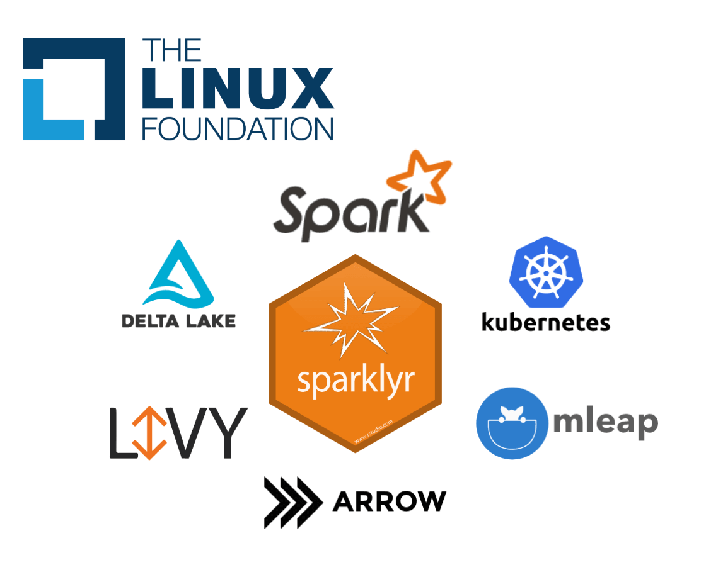

2020-01-29

Today we are excited to share that sparklyr 1.1 is now available on CRAN!
In a nutshell, you can use sparklyr to scale datasets across computing clusters running Apache Spark. For this particular release, we would like to highlight the following new features:
In addition, new community Extensions enable natural language processing and genomics, sparklyr is now being hosted within the Linux Foundation, and the Mastering Spark with R book is now available and free-to-use online.
You can install sparklyr 1.1 from CRAN as follows:
install.packages("sparklyr")The Delta Lake project is an open-source storage layer that brings ACID transactions to Apache Spark. To use Delta Lake, first connect using the new packages parameter set to "delta".
library(sparklyr)
sc <- spark_connect(master = "local", version = "2.4", packages = "delta")As a simple example, let’s write a small data frame to Delta using spark_write_delta(), overwrite it, and then read it back with spark_read_delta():
sdf_len(sc, 5) %>% spark_write_delta(path = "delta-test")
sdf_len(sc, 3) %>% spark_write_delta(path = "delta-test", mode = "overwrite")
spark_read_delta(sc, "/tmp/delta-1")# Source: spark<delta1> [?? x 1]
id
<int>
1 1
2 2
3 3Now, since Delta is capable of tracking all versions of your data, you can easily time travel to retrieve the version that we overwrote:
spark_read_delta(sc, "delta-test", version = 0L)# Source: spark<delta1> [?? x 1]
id
<int>
1 1
2 2
3 3
4 4
5 5To install and try out Spark 3.0 preview, simply run:
library(sparklyr)
spark_install("3.0.0-preview")
sc <- spark_connect(master = "local", version = "3.0.0-preview")You can then preview upcoming features, like the ability to read binary files. To demonstrate this, we can use pins to download a 237MB subset of ImageNet, and then load them into Spark:
tiny_imagenet <- pins::pin("http://cs231n.stanford.edu/tiny-imagenet-200.zip")
spark_read_source(sc, dirname(tiny_imagenet[1]), source = "binaryFile")# Source: spark<images> [?? x 4]
path modificationTime length content
<chr> <dttm> <dbl> <list>
1 file:images/test_2009.JPEG 2020-01-08 20:36:41 3138 < [3,138]>
2 file:images/test_8245.JPEG 2020-01-08 20:36:43 3066 < [3,066]>
3 file:images/test_4186.JPEG 2020-01-08 20:36:42 2998 < [2,998]>
4 file:images/test_403.JPEG 2020-01-08 20:36:39 2980 < [2,980]>
5 file:images/test_8544.JPEG 2020-01-08 20:36:38 2958 < [2,958]>
6 file:images/test_5814.JPEG 2020-01-08 20:36:38 2929 < [2,929]>
7 file:images/test_1063.JPEG 2020-01-08 20:36:41 2920 < [2,920]>
8 file:images/test_1942.JPEG 2020-01-08 20:36:39 2908 < [2,908]>
9 file:images/test_5456.JPEG 2020-01-08 20:36:42 2906 < [2,906]>
10 file:images/test_5859.JPEG 2020-01-08 20:36:39 2896 < [2,896]>
# … with more rowsPlease notice that the Spark 3.0.0 preview not a stable release in terms of either API or functionality.
Barrier execution is a new feature introduced in Spark 2.4 which enables Deep Learning on Apache Spark by implementing an all-or-nothing scheduler into Apache Spark. This allows Spark to not only process analytic workflows, but also to use Spark as a high-performance computing cluster where other framework, like OpenMP or TensorFlow Distributed, can reuse cluster machines and have them directly communicate with each other for a given task.
In general, we don’t expect most users to use this feature directly; instead, this is a feature relevant to advanced users interested in creating extensions that support additional modeling frameworks. You can learn more about barrier execution in Reynold Xin’s keynote.
To use barrier execution from R, set the barrier = TRUE parameter in spark_apply() and then make use of a new parameter in the R closure to retrieve the network address of the additional nodes available for this task. A simple example follows:
library(sparklyr)
sc <- spark_connect(master = "local", version = "2.4")
sdf_len(sc, 1, repartition = 1) %>%
spark_apply(~ .y$address, barrier = TRUE, columns = c(address = "character")) %>%
collect()# A tibble: 1 x 1
address
<chr>
1 localhost:50693Qubole is a fully self-service multi-cloud data platform based on enterprise-grade data processing engines including Apache Spark.
If you are using Qubole clusters, you can now easily connect to a Spark through a new "qubole" connection method:
library(sparklyr)
sc <- spark_connect(method = "qubole")Once connected, you can use Spark and R as usual. To learn more, visit RStudio for Running Distributed R Jobs.
The new github.com/r-spark repo contains new community extensions. To mention a few, variantspark and sparkhail are two new extensions for genomic research, sparknlp adds support for natural language processing.
For those of you with background in genomics, you can use sparkhail by first installing this extension from CRAN. Followed by connecting to Spark, creating a Hail Context, and then loading a subset of the 1000 Genomes dataset using Hail:
library(sparklyr)
library(sparkhail)
sc <- spark_connect(master = "local", version = "2.4", config = hail_config())
hc <- hail_context(sc)
hail_data <- pins::pin("https://github.com/r-spark/sparkhail/blob/master/inst/extdata/1kg.zip?raw=true")
hail_df <- hail_read_matrix(hc, file.path(dirname(hail_data[1]), "1kg.mt")) %>%
hail_dataframe()You can then analyze it with packages like dplyr, sparklyr.nested, and dbplot:
library(dplyr)
sdf_separate_column(hail_df, "alleles") %>%
group_by(alleles_1, alleles_2) %>%
tally() %>%
arrange(-n)# Source: spark<?> [?? x 3]
# Groups: alleles_1
# Ordered by: -n
alleles_1 alleles_2 n
<chr> <chr> <dbl>
1 C T 2436
2 G A 2387
3 A G 1944
4 T C 1879
5 C A 496
6 G T 480
7 T G 468
8 A C 454
9 C G 150
10 G C 112
# … with more rowsNotice that these frequencies come in pairs, C/T and G/A are actually the same mutation, just viewed from opposite strands. You can then create a histogram over the DP field, depth of the proband, as follows:
sparklyr.nested::sdf_select(hail_df, dp = info.DP) %>%
dbplot::dbplot_histogram(dp)
This code was adapted from Hail’s Genome Wide Association-Study. You can learn more about this Hail community extensions from r-spark/sparkhail.
The Linux Foundation is home of projects such as Linux, Kubernetes, Node.js and umbrella foundations such as LF AI, LF Edge, and LF Network. We are very excited to have sparklyr be hosted as an incubation project within LF AI alongside Acumos, Angel, Horovod, Pyro, ONNX and several others.
Hosting sparklyr in LF AI within the Linux Foundation provides a neutral entity to hold the project assets and open governance. Furthermore, we believe hosting with LF AI will also help bring additional talent, ideas, and shared components from other Linux Foundation projects like Delta Lake, Horovod, ONNX, and so on into sparklyr as part of cross-project and cross-foundation collaboration.
This makes it a great time for you to join the sparklyr community, contribute, and help this project grow. You can learn more about this in sparklyr.org.
Mastering Spark with R is a new book to help you learn and master Apache Spark with R from start to finish. It introduces data analysis with well-known tools like dplyr, and covers everything else related to processing large-scale datasets, modeling, productionizing pipelines, using extensions, distributing R code, and processing real-time data – if you are not yet familiar with Spark, this is a great resource to get started!
This book was published by O’Reilly, is available on Amazon, and is also free-to-use online. We hope you find this book useful and easy to read.
To catch up on previous releases, take a look at the sparklyr 1.0 post or watch various video tutorials in the mlverse channel.
Thank you for reading along!